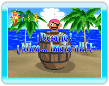
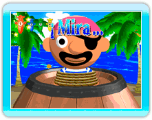
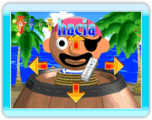
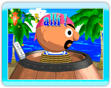

Puede que de repente te encuentres enfrentándote al Desafío del Capitán mientras juegas en el modo Fiesta Pop-Up. Este evento inevitable tiene lugar entre los turnos de los jugadores.
Mientras cada jugador clava una espada en el barril, él o ella será desafiado a un minijuego contra el Capitán. Triunfa y será el turno del siguiente jugador, pero si fracasas sólo tendrás 3 segundos para clavar tu espada.
El minijuego del Desafío del Capitán se desarrolla así:

1. "¡Mira..."
La pantalla se acerca a la cara del Capitán y un icono de Wii Remote aparece en el centro. En pantalla se muestra la palabra "¡Mira...".

↓

2. "hacia"
A continuación se muestra la palabra "hacia". Estate atento y mueve el icono del Wii Remote hacia arriba, hacia abajo, hacia la izquierda o hacia la derecha justo antes de que se mueva la cara del Capitán.
↓

3. "allí!"
Por último, la palabra "allí!" aparece en la pantalla mientras se mueve la cara del Capitán. Si mueves el Wii Remote en la dirección en la que está mirando el Capitán, ganas... pero si has elegido la dirección equivocada, pierdes. Después de mostrar el resultado, el juego continuará automáticamente con el turno del siguiente jugador.
Cuando cada jugador haya tenido su turno, terminará el minijuego.